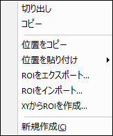

GeoTIFFファイルのインポートと処理
GeoTIFF-Importing-Processing
GeoTIFFは、標準の.tifまたは画像ファイル形式であり、.tifファイルにタグとして埋め込まれた追加の空間（ジオリファレンス）情報が含まれています。2022b以降、OriginではGeoTIFFファイルを簡単に処理できるようになりました。
Geotiffファイルをインポートする
画像としてインポート
ファイル: 新規作成: イメージ: 画像/動画メニューを選択してGeoTIFFを画像としてOrigin内に開きます。
ファイル: 新規作成: イメージ: 複数画像ファイルメニューを選択して、複数のGeoTIFFを画像としてOrigin内に開きます。
行列としてインポート
- 行列をアクティブにして、データ: ファイルからインポート: イメージファイルを行列へインポートメニューを選択し、ファイルを選択します。
- イメージファイルを行列へインポートダイアログで、グレースケールGeoTIFFをデータとしてインポートにチェックを付けます。
GeoTiFFにエクスポート
画像や行列をGeoTiFFとしてエクスポートするとき、グレースケールGeoTIFFとしてエクスポートにチェックを付けます。これにより、これらのダイアログにGeoTIFFオプションが追加されます。
- 必要に応じて、GTモデル、EPSG、線形単位、垂直の単位、を指定します。
- GeoTIFFで定義済みの設定は淡色表示（グレーアウト）され、編集できません。
画像をGeoTiFFとしてエクスポート
- ファイル：イメージのエクスポートメニューを選択してイメージダイアログを開きます（X-ファンクション = cvExport）。
- グレースケールGeoTIFFをデータとしてエクスポートにチェックを付けます。
- GeoTIFFファイルのオプションであるGTモデルEPSG、単位といったオプションを利用できます。
| Note: Originの画像がGeoTiFFファイルからのものである場合、GeoTiFFに再度エクスポートすると、デフォルトデータのGTモデル、EPSG、および単位が含まれます。
|
行列をGeoTiFFとしてエクスポート
- ファイル：エクスポート：イメージメニューを選択してイメージダイアログを開きます（X-ファンクション = expImage）。
- グレースケールGeoTIFFをデータとしてエクスポートにチェックを付けます。
- GeoTIFFファイルのオプションであるGTモデルEPSG、単位といったオプションを利用できます。
視覚化と処理
GeoTIFFの関心領域を抽出
- 行列の場合、矩形/円形/多角形/領域ツール
 を用いて領域を関心領域（ROI）として選択し、そこから情報を抽出することができます。
を用いて領域を関心領域（ROI）として選択し、そこから情報を抽出することができます。
NetCDFのROIに関する行列データのプロファイリングの詳細については、このページを参照してください。
- イメージの場合も行列からの抽出と同様に関心領域を抽出できます。
ROIを右クリックして、ショートカットメニューからオプションを選択します。
- 
別のパレットを適用
カラーパレットを適用
イメージがアクティブなとき、パレットボタン と欠損値の色ボタン
と欠損値の色ボタン （ミニツールバー）を使用して、行列ウィンドウの色を編集できます。
（ミニツールバー）を使用して、行列ウィンドウの色を編集できます。
カラーパレットをクリアしたい場合、以下のスクリプトをスクリプトウィンドウで実行します。
img.Palette$="";
パレット反転
イメージウィンドウでパレットを適用すると、ミニツールバーのパレット反転 ボタンをつかって、パレットの色を反転できます。
ボタンをつかって、パレットの色を反転できます。
グレースケール表示範囲の設定
デフォルトのグレースケール表示が十分でない、あるいは見分けずらい場合があります。その場合、グレースケールの表示範囲を設定することで修正できます。
1.グレースケール表示範囲の決定
イメージウィンドウをアクティブにします。
- メニューからイメージ：グレースケールヒストグラムを選択してcvhistogramダイアログを開きます。これにより、ピクセル強度分布が出力され、そこから主な分布を簡単に確認できます。
または
画像データの種類によってはグレースケールヒストグラムツールが利用できないことがあります。
- メニューからイメージ：列に変換を選択してcv2colダイアログを開きます。これにより各ポイントのピクセル値を出力します。ピクセル値に対して度数表の機能を実行して主な分布を決定します。
2.グレースケール表示範囲の設定
イメージウィンドウをアクティブにします。
- イメージ：グレースケール表示範囲を設定を選択します。
または
- イメージウィンドウ内の境界上でクリックしてミニツールバーを表示し、
 ボタンをクリックします。
ボタンをクリックします。
これにより、 cvgraymaxダイアログが開きます。前の操作で決定した主な分布から最小と最大のピクセル値を設定します。

|
- イメージウィンドウをアクティブにして、イメージ：グレースケールヒストグラムメニューを選択します。新しいワークシートにピクセル強度分布を出力します。
- 出力ワークシートデータを確認してピクセル値の主な分布を確認します。
- イメージウィンドウをアクティブにして、イメージ：グレースケール表示範囲を設定メニューを選択します。前述の操作で得られた最小と最大のピクセル値に変更します。
|
または、よりシンプルでインタラクティブな方法もあります。
- イメージウィンドウ内の境界上でクリックしてミニツールバーを表示します。グレースケールスライダボタンをクリックします。
- 開いた表示範囲調整ダイアログで、最小と最大のピクセル値をそれぞれ変更できます。前の手順で決定した主な配信範囲に合わせて、スライダの開始点およびスライダの終了点を変更し、スライダをドラッグして「ちょうどいい」表示範囲を見つけます。

GeoTIFF画像のサイズ変更
GeoTIFF画像のサイズを変更するには、イメージ：サイズ変更を選択してcvResizeを開き、補間方法を選択して画像サイズを設定します。
グラフ作成
ラスターデータを等高線図、曲面図として作図
GeoTIFFファイルをイメージウィンドウにインポート後、関心領域を抽出できます。次に、イメージ：行列に変換を選択し、行列データを使用して等高線図や曲面図などを作成します。

GeoTIFFをグラフの背景として設定
- GeoTIFF画像をイメージウィンドウにインポートします。
- イメージを挿入したい円、棒、バブルプロットといったグラフウィンドウをアクティブにします。挿入：イメージウィンドウからの画像を選択して、画像を背景として挿入します。

解析
GeoTIFFファイルをOriginにスタック行列としてインポートすると、NetCDFファイルと同様にOrigin解析ツールを使用できます。